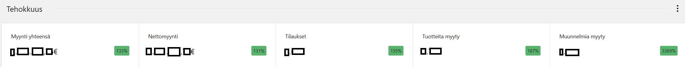
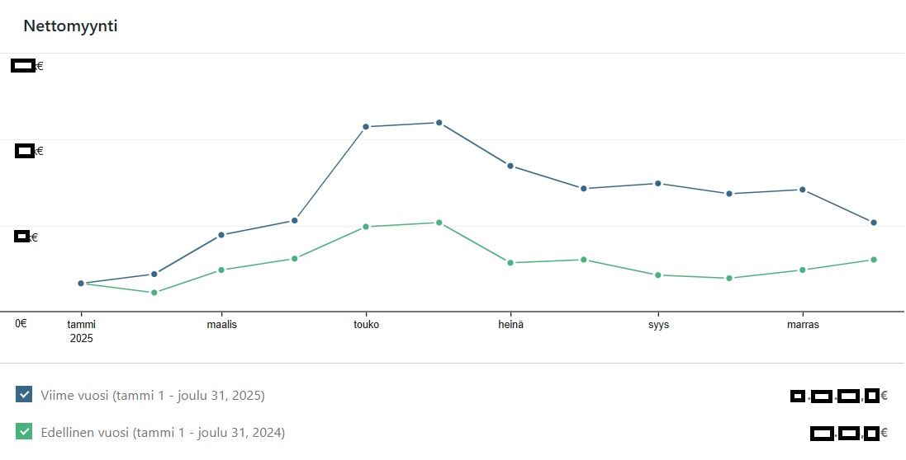
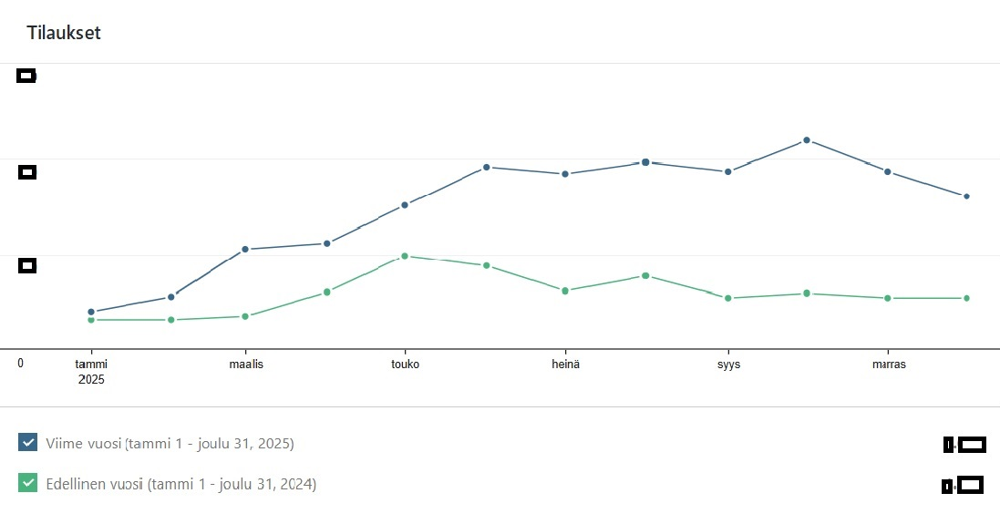

Pienkonecenter.fi on laaja pienkoneiden ja varaosien verkkokauppa. Projektin tavoitteena oli uudistaa verkkokaupan ilme, parantaa käytettävyyttä ja tehostaa myyntiä. Vastasin sivuston teknisestä toteutuksesta, integraatioista ja hakukoneoptimoinnin teknisistä ratkaisuista.
Sivusto koki täydellisen muodonmuutoksen, jossa vanha ilme päivitettiin nykyaikaiseksi ja mobiiliystävälliseksi.
Uudistuksen ja jatkuvan kehitystyön myötä verkkokaupan myynti ja tilausmäärät ovat kasvaneet merkittävästi. Toteutin sivustolle seurannan, jonka avulla voimme reagoida nopeasti asiakaskäyttäytymisen muutoksiin.


